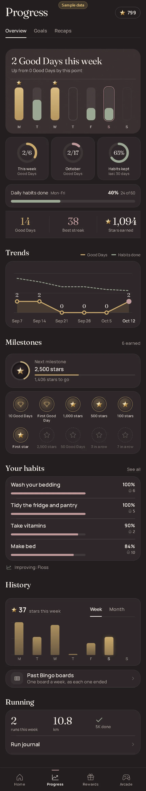

Progress · Activity switched to the stars chart
- Area
- Progress
- Screen 20 of 65
- progress-activity-stars
- Capture
- full scrolling page (430×2343), demo time 15:00, sample data
- Image
- img/20-progress-activity-stars.webp

Text on this screen
Progress Overview Goals Recaps 1 Good Day this week Up from 0 Good Days by this point This week 1 of 5 Good Days so far October 2 of 16 Good Days so far Habits kept 65% last 30 days M T W T F S S Daily habits done Mon–Thu 33% 16 of 48 14 Good Days 38 Best streak 1,091 Stars earned Trends Good Days a week, last 6 weeks 3 Sep 7 1 Sep 14 0 Sep 21 0 Sep 28 1 Oct 5 1 Oct 12 Milestones 6 earned Next milestone 2,500 stars 1,409 stars to go 10 Good Days First Good Day 1,000 stars 500 stars 100 stars First star 4 more to earn Your habits See all Take vitamins 90% 2 Make bed 84% 10 Brush teeth 83% No unnecessary spending 68% Improving: Floss History Days 23 stars this week Week Month M T W T F S S Past Bingo boards One board a week, as each one ended Running 1 run this week 5.3 km 5K done Run journal